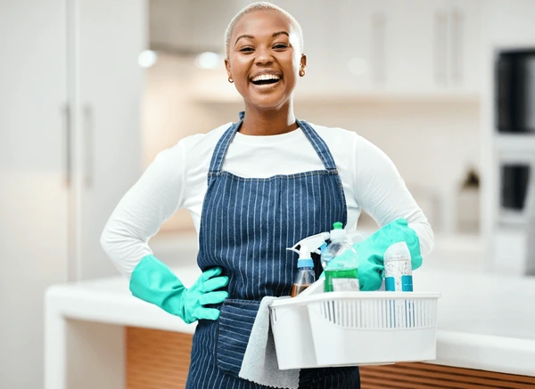

Sinesipho Peter
Founder & Operations Manager
Leads field operations, staff recruitment, and youth training programs across all operating service areas.
Start on a clean slate.
Apron Cleans Co. ZA started from humble beginnings. What began as a genuine love for domestic care and helping neighbors quickly revealed a major community need: reliable, trustworthy, and detailed cleaning services that give busy families their time back.
Starting with borrowed detergents, handmade uniforms, and an unstoppable work ethic, our founder built the business step-by-step. Today, we proudly hire, train, and mentor local unemployed youth, turning raw enthusiasm into professional cleaning perfection.
To provide reliable, high-hygiene cleaning services that save our clients time, while empowering unemployed youth with skill development, dignified employment, and financial independence.
To grow into a leading national cleaning brand recognized for uncompromised quality, exceptional customer trust, and meaningful social impact across South Africa.

Founder & Operations Manager
Leads field operations, staff recruitment, and youth training programs across all operating service areas.
Quality Assurance & Client Relations
Ensures every property meets our strict "Clean Slate" quality checklist prior to final inspection.